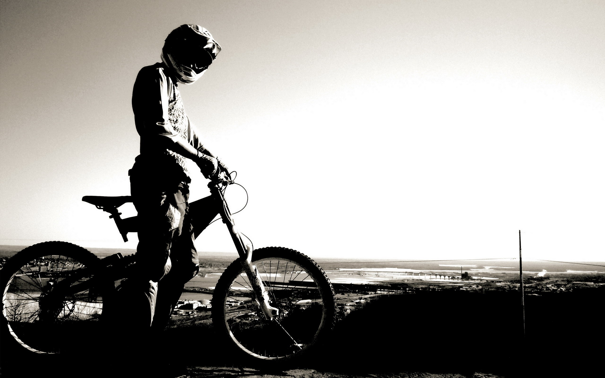

Все BMX имеют схожие черты. Они предназначены для экстремального катания и выдерживают большие нагрузки. Рама и вилка жесткие, никакой амортизации. Диаметр колес 20 дюймов, хотя встречаются версии с 16”, 18” и даже 24” колесами. Скорость одна.
Версий о происхождении этого вида спорта очень много, основная - основателем стал американец Gary Turner (Гари Тёрнер) (основатель фирмы GT), который разработал специально для своего сына небольшой велосипед, чтобы тот мог гонять по взрослым мото-трассам. Вот и появился вид великов – bmx и первая дисциплина – рейсинг (racing).
Bmx стал очень популярным, а вот рейсинг многим казался скучным, поэтому сами сабой появились стили: стрит (street), флэт (flat), верт (vert) и дерт (dirt).
Первые же соревнования прошли в 1976-78 годах, поэтому совсем нельзя говорить, что bmx – это молодой вид спорта )))..
Байки того времени были совсем не похожи на современные bmx, хотя лидерами были GT и Haro. Тормоза тогда были сделаны из пластика, так как хромовых ободов – не было.
Первым настоящим фристайл-байком был Haro Sport. У него были опускающиеся пеги, тормоза mags и GYRO (система, которая позволяла вращать руль на 360 градусов, не запутывая тормозные тросики). Пеги тогда наворачивались на ось, что довольно часто приводило к поломке оси. В 1988 байки начинают постепенно переходить на 990е тормоза.
Новый зрелищный вид спорта подхватила Американская Фристайл-Ассоциация (AFA). Она объединила сотни райдеров-гонщиков, флэтлэндеров, и фанатов верта, которые начали следовать традициям AFA и надевали полную защиту. В AFA были начинающие, опытные, эксперты и профессионалы, разделённые на 4 группы: от 13 и младше, 14-15, 16-18, 19 и старше. Флэтлэнд занимал ведущее место. Для примера в одном из состязаний было 120 участников в категории 16-18 среди экспертов по флэтлэнду.
Время с 1989 по 1991 года – 3 года, в которые bmx как спорт исчез. Соревнования прекратились, райдерам надоело тратить огромные деньги на покупку запчастей и починку велосипедов. Культура bmx на время просто исчезла.
Но спустя 3 года, начался новый этап развития bmx. И на этот bmx очень сильно повлияли: New school стиль – трюки стали напоминать акробатику и разработки велосипедных компаний, нацеленные на увеличение прочности и долговечности деталей. И вот настает эпоха стрита. Площадки меняются от места к месту, разное расположение трамплинов заставляет райдеров кататься по-разному в каждом новом месте.
В России bmx начал развиваться в 1990-е годы и опять с рейсинга.
Сейчас же bmx очень популярен, особенно дисциплины Freestyle, это все кроме рейсинга.
BMX рейс появился в США в начале 70-х. Дети мотокроссеров “зависали” со своими отцами на трассах и пытались их обкатывать на великах, либо строили похожие трассы и соревновались друг с другом. Со временем такой способ времяпровождения заинтересовал и взрослых. Версий о происхождении этого вида спорта очень много, основная - основателем стал американец Gary Turner (Гари Тёрнер) (основатель фирмы GT), который разработал специально для своего сына небольшой велосипед, чтобы тот мог гонять по взрослым мото-трассам. Вот и появился вид великов – bmx и первая дисциплина – рейсинг (racing).
К концу 70-х bicycle motocross (BMX) стал самостоятельным видом спорта. В 1993 году рейс был включён в Международный союз (UCI), а в 2008 году в программу Олимпийских Игр в Пекине.
Особенности катания. Трасса для BMX рейса — это несколько широких прямых, состоящих из трамплинов, ритмсекций и т.д., соединенных виражами. Начинается трасса со стартовой разгонки высотой в несколько метров. Во время заезда состязаются до 8 гонщиков одновременно.
Цель — обогнать соперников и прийти к финишу первым. Скорость достигается быстрым педалированием и прокачиванием трассы. Разрешается контактная борьба: можно толкаться локтями, подрезать и т.д.
BMX дёрт.
зародился в 80−х. Некоторым рейсерам нравилось прыгать трамплины, но надоело качать ритмсекции гоночных трасс. Тогда они построили отдельно стоящий самодостаточный трамплин, который не являлся частью какой-либо трассы. Прыжки по прямой тоже быстро надоели и райдеры начали придумывать трюки и пытаться выполнить их в полете.
Особенности катания. Дерт, как фигура, обычно делается из земли, реже дерева, и состоит из вылета и приземления. На соревнованиях по дерт джампингу может быть один или несколько таких трамплинов, стоящих друг за другом. Для успешного прыжка райдеру не нужно неистово крутить педали как в рейсе. Цель — выполнять в воздухе трюки. Чем сложнее трюки, чем их больше, чем выше полет и чище приземление — тем больше баллов получает райдер.
BMX Стрит
История. В 76 году в Калифорнии была страшная засуха. Из-за нее полностью пересохло много частных бассейнов, которыми заинтересовались любители скейтборда. Плавные изгибы бассейнов были удобны для катания. По их образу и подобию начали строить фигуры и целые парки, предназначенные для скейтбордов. В 80-х годах в скейтпарках начали кататься и BMX райдеры, а позже и сами стали строить такие парки, устраивая в них шоу для публики.
Особенности катания. Парк — совокупность разных фигур, расположенных на одной площади. Квотеры, рампы, спайны, фанбоксы (значения этих страшных слов объясним в другой раз)… Конфигурация ограничена только фантазией строителей. На парковых соревнованиях помимо трюков и амплитуды оценивается вариативность использования парка. Чем больше фигур задействует райдер в заезде — тем больше получит баллов.
BMX Вёрт Это трюковое катание в рампе, представляющей собой желоб высотой 4–5 метра. Многие демонстрируемые в Vert трюки позаимствованы у роллеров и скейтеров.
Велосипеды для Vert’а имеют крепкую конструкцию и довольно тяжелый вес, оборудуются передними и задними тормозами и четырьмя «пегами».
BMX Флэтленд сложный, но очень зрелищный стиль. Для катания нужна ровная поверхность с хорошим покрытием. Эта дисциплина требует от спортсмена безупречный контроль велосипеда и исключительное чувство баланса.
Особенности катания. «Флэтленд» похож на акробатические номера в цирке: езда на одном колесе, езда без рук, вперед спиной, различные обороты, и т.д.
СТИЛИ КАТАНИЯ